PoET 1.0 Specification¶
Introduction¶
The Proof-of-Elapsed-Time or PoET Consensus method offers a solution to the Byzantine Generals Problem that utilizes a “trusted execution environment” to improve on the efficiency of present solutions such as Proof-of-Work. The initial reference implementation of PoET released to Hyperledger was written for an abstract TEE to keep it flexible to any TEE implementation. This specification defines a concrete implementation for SGX. The following presentation assumes the use of Intel SGX as the trusted execution environment.
At a high-level, PoET stochastically elects individual peers to execute requests at a given target rate. Individual peers sample an exponentially distributed random variable and wait for an amount of time dictated by the sample. The peer with the smallest sample wins the election. Cheating is prevented through the use of a trusted execution environment, identity verification and blacklisting based on asymmetric key cryptography, and an additional set of election policies.
Definitions¶
The following terms are used throughout the PoET spec and are defined here for reference.
- Enclave
A protected area in an application’s address space which provides confidentiality and integrity even in the presence of privileged malware.
The term can also be used to refer to a specific enclave that has been initialized with a specific code and data.
- Basename
- A service provider base name. In our context the service provider entity is the distributed ledger network. Each distinct network should have its own Basename and Service Provider ID (see EPID and IAS specifications).
- EPID
- An anonymous credential system. See E. Brickell and Jiangtao Li: “Enhanced Privacy ID from Bilinear Pairing for Hardware Authentication and Attestation”. IEEE International Conference on Social Computing / IEEE International Converence on Privacy, Security, Risk and Trust. 2010.
- EPID Pseudonym
- Pseudonym of an SGX platform used in linkable quotes. It is part of the IAS attestation response according to IAS API specifications. It is computed as a function of the service Basename (validator network in our case) and the device’s EPID private key.
- PPK, PSK
- PoET ECC public and private key created by the PoET enclave.
- IAS Report Key
- IAS public key used to sign attestation reports as specified in the current IAS API Guide.
- PSEmanifest
- Platform Services Enclave manifest, it is part of an SGX quote for enclaves using Platform Services like Trusted Time and Monotonic Counters.
- AEP
- Attestation evidence payload sent to IAS (see IAS API specifications). Contains JSON encodings of the quote, an optional PSEmanifest and an optional nonce.
- AVR
- Attestation verification report, the response to a quote attestation request from the IAS. It is verified with the IAS Report Key. It contains a copy of the input AEP.
- 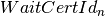
- The
 -th or most recent WaitCertificate digest. We
assume represents the current number of blocks in the ledger.
WaitCertId is a function of the contents of the Wait Certificate. For
instance the SHA256 digest of the WaitCertificate ECDSA signature.
-th or most recent WaitCertificate digest. We
assume represents the current number of blocks in the ledger.
WaitCertId is a function of the contents of the Wait Certificate. For
instance the SHA256 digest of the WaitCertificate ECDSA signature. - OPK, OSK
- Originator ECDSA public and private key. These are the higher level ECDSA keys a validator uses to sign messages.
- OPKhash
- SHA256 digest of OPK
- blockDigest
- ECDSA signature with OSK of SHA256 digest of transaction block that the validator wants to commit.
- localMean
- Estimated wait time local mean.
- MCID
- SGX Monotonic Counter identifier.
- SealKey
- The SGX enclave Seal Key. It is used by the SGX
sgx_seal_data()andsgx_unseal_data()functions. - PoetSealKey
- The Poet SGX enclave Seal Key. It must be obtained through the
SGX SDK
`sgx_get_key()function passing a fixed 32 byte constant askey_idargument. - PoET_MRENCLAVE
- Public MRENCLAVE (see SGX SDK documentation) value of valid PoET SGX enclave.
- 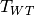
- WaitTimer timeout in seconds. A validator has at most seconds to consume a WaitTimer, namely obtain a WaitCertificate on it after the WaitTimer itself has expired.

- Number of blocks a validator can commit before having to sign-up with a fresh PPK.

- The “sign-up delay”, i.e., number of blocks a validator has to wait after sign-up before starting to participate in elections.
- minDuration
- Minimum duration for a WaitTimer.
P2P PoET SGX Enclave Specifications¶
The P2P PoET SGX enclave uses the following data structures:
WaitTimer {
double requestTime
double duration
byte[32] WaitCertId:sub:`n`
double localMean
}
WaitCertificate {
WaitTimer waitTimer
byte[32] nonce
byte[] blockDigest
}
It uses the following global variables:
WaitTimer activeWT # The unique active WaitTimer object
byte[64] PPK
byte[64] PSK
MCID # SGX Monotonic Counter Identifier
It exports the following functions:
generateSignUpData(OPKhash)¶
Returns
byte[64] PPK
byte[432] report # SGX Report Data Structure
byte[256] PSEmanifest
byte[672] sealedSignUpData # (PPK, PSK, MCID) tuple encrypted with SealKey
**Parameters**
byte[32] OPKhash # SHA256 digest of OPK
Description
- Generate fresh ECC keypair (PPK, PSK)
- Create monotonic counter and save its identifier as MCID.
- Use the SGX
sgx_seal_data()function to encrypt (PPK, PSK, MCID) with SealKey (using MRENCLAVE policy) 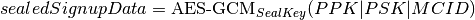 - Create SGX enclave report, store
SHA256(OPKhash|PPK)inreport_datafield. - Get SGX PSE manifest: PSEManifest.
- Save (PPK, PSK, MCID) as global variables within the enclave.
- Set active WaitTimer instance activeWT to NULL.
- Return (PPK, report, PSEmanifest, sealedSignUpData).
Note
Implementation Note: Normally there is a maximum number of monotonic counters that can be created. One way to deal with this limitation is to destroy a previously created monotonic counter if this is not the first time the generateSignupData function was called.
unsealSignUpData(sealedSignUpData)¶
Returns
byte[64] PPK
Parameters
byte[672] sealedSignUpData # (PPK, PSK, MCID) tuple encrypted with SealKey
Description
- Use the
sgx_unseal_data()function to decrypt sealedSignUpData into (PPK, PSK, MCID) with SealKey (using MRENCLAVE policy). - Save (PPK, PSK, MCID) as global variables within the enclave.
- Set global active WaitTimer instance activeWT to NULL.
- Return PPK
createWaitTimer(localMean, WaitCertId_n)¶
Returns
WaitTimer waitTimer
byte[64] signature # ECDSA PSK signature of waitTimer
Parameters
double localMean # Estimated wait time local mean
byte[32] WaitCertId_n # SHA256 digest of WaitCertificate owner's ECDSA
# signature
Description
- Increment monotonic counter MCID and store value in global variable counterValue.
- Compute 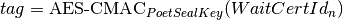.
- Convert lowest 64-bits of tag into double precision number in 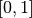: tagd.
- Compute 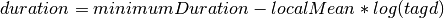.
- Set requestTime equal to SGX Trusted Time value.
- Create WaitTimer object 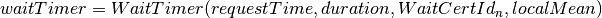.
- Compute ECDSA signature of waitTimer using PSK: 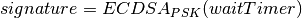.
- Set global active WaitTimer instance activeWT equal to waitTimer.
- Return (waitTimer, signature).
createWaitCertificate(blockDigest)¶
Returns
WaitCertificate waitCertificate
byte[64] signature # ECDSA PSK signature of waitCertificate
Parameters
byte[] blockDigest # ECDSA signature with originator private key of SHA256
# digest of transaction block that the validator wants
# to commit
Description
- If activeWT is equal to NULL, exit.
- Read monotonic counter MCID and compare its value to global variable counterValue. If values do not match, exit.
- Read SGX Trusted time into variable currentTime. If currentTime is smaller than 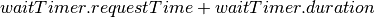, exit (the duration has not elapsed yet).
- If currentTime is larger than 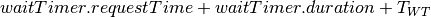, exit.
- Generate random nonce.
- Create WaitCertificate object 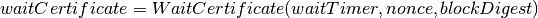.
- Compute ECDSA signature of waitCertificate using PSK: 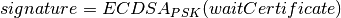.
- Set activeWT to NULL.
- Return (waitCertificate, signature).
Sign-up Phase¶
A participant joins as a validator by downloading the PoET SGX enclave and a SPID certificate for the block chain. The client side of the validator runs the following sign-up procedure:
Start PoET SGX enclave: ENC.
Generate sign-up data: 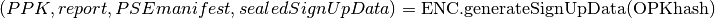 The
report_data(512 bits) field in the report body includes the SHA256 digest of (OPKhash | PPK).Ask SGX Quoting Enclave (QE) for linkable quote on the report (using the validator network’s Basename).
If Self Attestation is enabled in IAS API: request attestation of linkable quote and PSE manifest to IAS. The AEP sent to IAS must contain:
- isvEnclaveQuote: base64 encoded quote
- pseManifest: base64 encoded PSEmanifest
- nonce:
The IAS sends back a signed AVR containing a copy of the input AEP and the EPID Pseudonym.
If Self Attestation is enabled in IAS API: broadcast self-attested join request, (OPK, PPK, AEP, AVR) to known participants.
If Self Attestation is NOT enabled in IAS API: broadcast join request, (OPK, PPK, quote, PSEmanifest) to known participants.
A validator has to wait for block to be published on the distributed
ledger before participating in an election.
The server side of the validator runs the following sign-up procedure:
Wait for a join request.
Upon arrival of a join request do the verification:
If the join request is self attested (Self Attestation is enabled in IAS API): (OPK, PPK, AEP, AVR)
- Verify AVR legitimacy using IAS Report Key and therefore quote legitimacy.
- Verify the
report_datafield within the quote contains the SHA256 digest of (OPKhash | PPK). - Verify the nonce in the AVR is equal to , namely the digest of the most recently committed block. It may be that the sender has not seen yet and could be sending 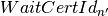 where 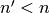. In this case the sender should be urged to updated his/her view of the ledger by appending the new blocks and retry. It could also happen that the receiving validator has not seen in which case he/she should try to update his/her view of the ledger and verify again.
- Verify MRENCLAVE value within quote is equal to PoET_MRENCLAVE (there could be more than one allowed value).
- Verify PSE Manifest SHA256 digest in AVR is equal to SHA256 digest of PSEmanifest in AEP.
- Verify basename in the quote is equal to distributed ledger Basename.
- Verify attributes field in the quote has the allowed value (normally the enclave must be in initialized state and not be a debug enclave).
If the join request is not self attested (Self Attestation is NOT enabled in IAS API): (OPK, PPK, quote, PSEmanifest)
- Create AEP with quote and PSEmanifest :
- isvEnclaveQuote: base64 encoded quote
- pseManifest: base64 encoded PSEmanifest
- Send AEP to IAS. The IAS sends back a signed AVR.
- Verify received AVR attests to validity of both quote and PSEmanifest and save EPID Pseudonym.
- Verify
report_datafield within the quote contains the SHA256 digest of (OPKhash | PPK). - Verify MRENCLAVE value within quote is equal to PoET_MRENCLAVE (there could be more than one allowed value).
- Verify basename in the quote is equal to distributed ledger Basename.
- Verify attributes field in the quote has the allowed value (normally the enclave must be in initialized state and not be a debug enclave).
If the verification fails, exit.
If the verification succeeds but the SGX platform identified by the EPID Pseudonym in the quote has already signed up, ignore the join request, exit.
If the verification succeeds:
- Pass sign-up certificate of new participant (OPK, EPID Pseudonym, PPK, current to upper layers for registration in EndPoint registry.
- Goto 1.
Election Phase¶
Assume the identifier of the most recent valid block is . Broadcast messages are signed by a validator with his/her PPK. To participate in the election phase a validator runs the following procedure on the client side:
- Start the PoET SGX enclave: ENC.
- Read the sealedSignUpData from disk and load it into enclave: 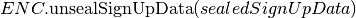
- Call 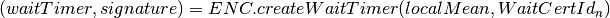.
- Wait waitTimer.duration seconds.
- Call 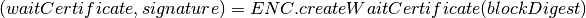.
- If the
createWaitCertificate()call is successful, broadcast (waitCertificate, signature, block, OPK, PPK) where block is the transaction block identified by blockDigest.
On the server side a validator waits for incoming (waitCertificate, signature, block, OPK, PPK) tuples. When one is received the following validity checks are performed:
- Verify the PPK and OPK belong to a registered validator by checking the EndPoint registry.
- Verify the signature is valid using sender’s PPK.
- Verify the PPK was used by sender to commit less than blocks by
checking EndPoint registry (otherwise sender needs to re-sign).
- Verify the waitCertificate.waitTimer.localMean is correct by comparing against locaMean computed locally.
- Verify the waitCertificate.blockDigest is a valid ECDSA signature of the SHA256 hash of block using OPK.
- Verify the sender has been winning elections according to the expected distribution (see z-test documentation).
- Verify the sender signed up at least committed blocks ago, i.e.,
respected the block start-up delay.
A valid waitCertificate is passed to the upper ledger layer and the waitCertificate with the lowest value of waitCertificate.waitTimer.duration determines the election winner.
Revocation¶
Two mechanisms are put in place to blacklist validators whose EPID key has been revoked by IAS. The first one affects each validator periodically, although infrequently. The second one is an asynchronous revocation check that each validator could perform on other validators’ EPID keys at any time.
- Periodic regeneration of PPK a validator whose EPID key has been revoked
by the IAS would not be able to obtain any valid AVR and therefore would be
prevented from signing-up. Forcing validators to periodically re-sign with a
fresh sign-up certificate leaves validators whose EPID keys have been revoked
out of the system. Validators have to re-sign after they commit
blocks and if they do not they are considered revoked.
- Asynchronous sign-up quote verification A validator can (at any time) ask
IAS for attestation on a quote that another validator used to sign-up to
check if his/her EPID key has been revoked since. If so the returned AVR will
indicate that the key is revoked. A validator who obtains such an AVR from
IAS can broadcast it in a blacklisting transaction, so that all the
validators can check the veracity of the AVR and proceed with the
blacklisting. To limit the use of blacklisting transactions as a means to
thwart liveness for malicious validators one can control the rate at which
they can be committed in different ways:
- A certain number of participation tokens needs to be burned to commit a blacklisting transaction.
- A validator can commit a blacklisting transaction only once he/she wins one or more elections.
- A validator who commits a certain number of non-legit blacklisting transactions is blacklisted.
Security Considerations¶
- motivation: A validator has at most seconds to consume a WaitTimer, namely obtain a WaitCertificate on it after the WaitTimer itself has expired. This constraint is enforced to avoid that in case there are no transactions to build a block for some time several validators might hold back after they waited the duration of their WaitTimers and generate the WaitCertificate only once enough transactions are available. At the point they will all send out their WaitCertificates generating a lot of traffic and possibly inducing forks. The timeout mitigates this problem.
- Enclave compromise: a compromised SGX platform that is able to arbitrarily win elections cannot affect the correctness of the system, but can hinder progress by publishing void transactions. This problem is mitigated by limiting the frequency with which a validator (identified by his/her PPK) can win elections in a given time frame (see z-test documentation).
- WaitTimer duration manipulation:
- Imposing a block participation delay after sign-up prevents
validators from generating different pairs of OPK, PPK and pick the one that
would result in the lowest value of the next WaitTimer duration as follows:
- Generate as many PPK,PSK pairs and therefore monotonic counters as possible.
- Do not sign up but use all the enclaves (each using a different PPK, PSK and MCID) to create a WaitTimer every time a new block is committed until a very low duration is obtained (good chance of winning the election). Then collect all the different waitCertIds.
- Ask each enclave to create the next waitTimer, whose duration depends on each of the different winning waitCertIds. Choose the PPK of the enclave giving me the lowest next duration and sign up with that.
- As a result an attacker can win the first the election (with high probability) and can chain the above 3 steps to get a good chance of winning several elections in a row.
- The nonce field in WaitCertificate is set to a random value so that a validator does not have control over the resulting . A validator winning an election could otherwise try different blockDigest input values to createWaitCertificate and broadcast the WaitCertificate whose results in the lowest duration of his/her next WaitTimer.
- The call
createWaitTimer()in step 1 of the election phase (client side) is bound to the subsequent call tocreateWaitCertificate()by the internal state of the PoET enclave. More precisely only one call tocreateWaitCertificate()is allowed after a call tocreateWaitTimer()(and the duration has elapsed) as the value of the global active WaitTimer object activeWT is set to null at the end ofcreateWaitCertificate()so that subsequent calls would fail. Therefore only one transaction block (identified by the input parameter blockDigest) can be attached to a WaitCertificate object. This prevents a malicious user from creating multiple WaitCertificates (each with a different nonce) resulting in different WaitCertId digests without re-creating a WaitTimer (and waiting for its duration) each time. It follows that as long as the duration of WaitTimer is not too small a malicious validator who wins the current election has very limited control over the duration of his/hers next WaitTimer. - The check on the Monotonic Counter value guarantees only one enclave instance can obtain a WaitCertificate after the WaitTimer duration elapses. This again prevents a malicious user from running multiple instances of the enclave to create multiple WaitCertificates (each with a different nonce) resulting in different WaitCertId digests and selecting the one that would result in the lowest duration for a new WaitTimer.
- A monotonic counter with id MCID is created at the same time PPK and PSK are generated and the triple (MCID, PPK, PSK) is encrypted using AES-GCM with the Seal Key and saved in permanent storage. A malicious validator cannot run multiple enclave instances (before signing up) to create multiple monotonic counters without being forced to commit to using only one eventually. As a monotonic counter is bound to PPK, PSK through the AES-GCM encryption with the Seal Key, when a validator signs-up with a PPK it automatically commits to using the monotonic counter that was create along with PPK, PSK.
- Imposing a
- Sign-up AEP replay: the use of the nonce field in the AEP, which is set equal to , is used to prevent the replay of old AEPs.
Comments on multi-user or multi-ledger SGX enclave service¶
It is possible to use the same enclave for multiple users or ledgers by making
username and ledgername input Parameters to generateSignUpData() and
unsealSignUpData(). Then the sign-up tuple (username, ledgername, PPK, PSK,
MCID) is sealed to disk, with username and ledgername used to generate the
filename. Anytime a user authenticates to the service the latter can have the
enclave unseal and use the sign-up tuple from the file corresponding to that
user (and ledger).
Population Size and Local Mean Computation¶
Parameters:
- targetWaitTime: the desired average wait time. This depends on the network diameter and is selected to minimize the probability of a collision.
- initialWaitTime: the initial wait time used in the bootstrapping phase until the ledger contains sampleLength blocks.
- sampleLength: number of blocks that need to be on the ledger to finish the bootstrapping phase and get into the steady phase.
- minimumWaitTime: a lower bound on the wait time.
The population size is computed as follows:
- foreach wait certificate stored on the ledger: * * 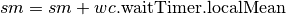
- 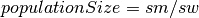
Assuming  is the number of blocks currently stored on the ledger the
local mean is computed as follows:
is the number of blocks currently stored on the ledger the
local mean is computed as follows:
- if 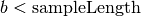 then 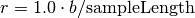 and 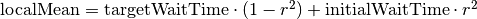.
- else 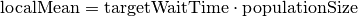
z-test¶
A z-test is used to test the hypothesis that a validator won elections at a higher average rate than expected. Parameters:
1. zmax: test value, it measures the deviation from the expected mean. It is selected so that the desired confidence interval $alpha$ is obtained. Example configurations are:
- 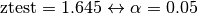
- 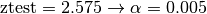
- testIdentifier: the validator identifier under test.
- blockArray: an array containing pairs of validator identity and estimated population size: 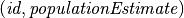. Each pair represents one published transaction block.
- minObserved: minimum number of election wins that needs to be observed for the identifier under test.
The z-test is computed as follows:
observed = expected = blockCount = 0
foreach b = (id, populationEstimate) in blockArray:
blockCount += 1
expected += 1 / populationEstimate
if id is equal to testIdentifier:
observed += 1
if observed > minObserved and observed > expected:
p = expected / blockCount
σ = sqrt(blockCount * p * (1.0 - p))
z = (observed - expected) / σ
if z > zmax:
return False
return True
If the z-test fails (False is returned) then the validator under test won elections at a higher average rate than expected.